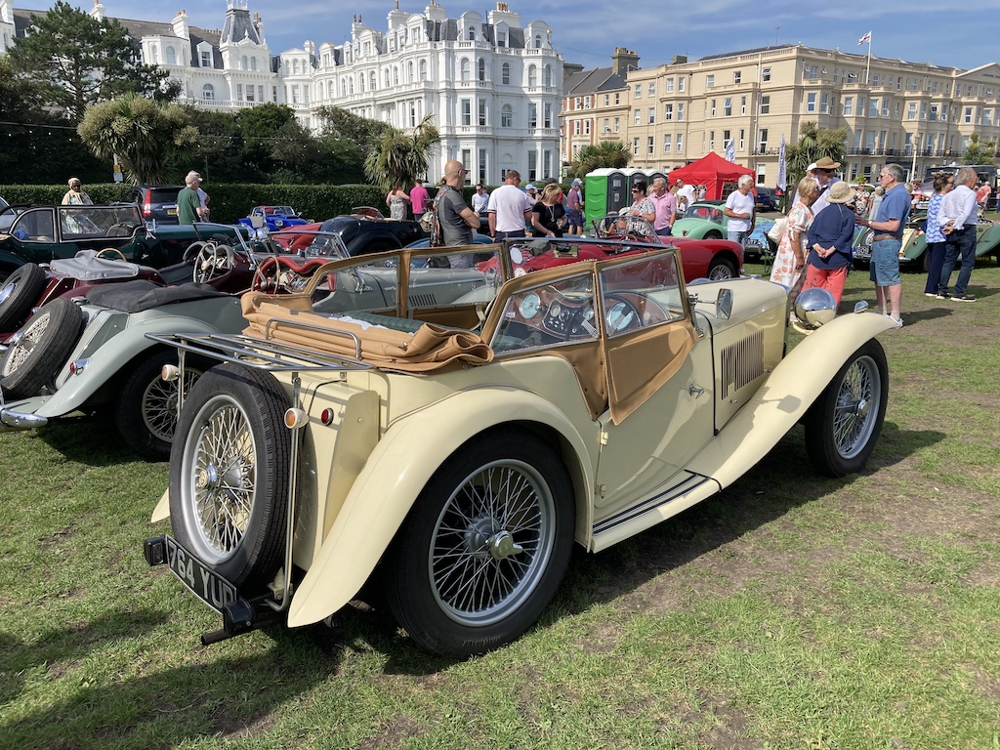
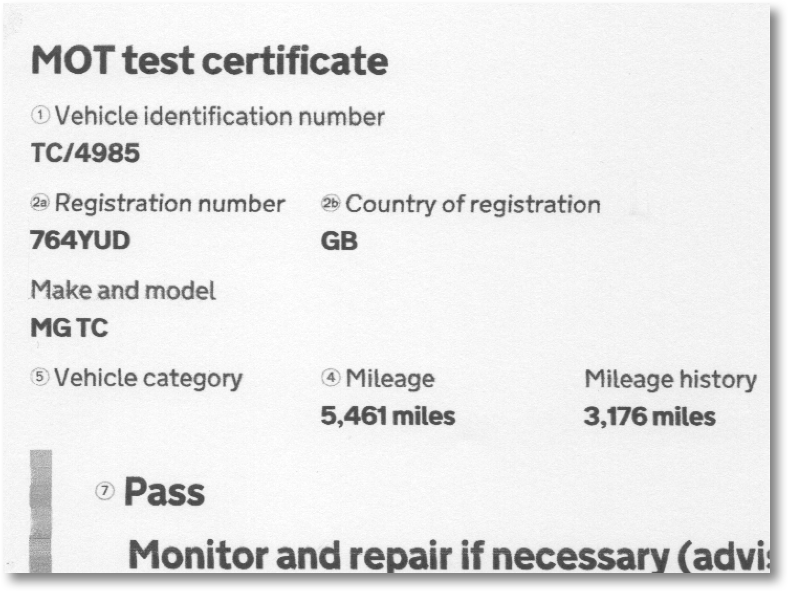

When I bought TC4985 in June 2015 it did not come with an MoT test certificate. In fact I have no evidence of it ever having one. My TC was repatriated from the USA in 2010 and it took the first UK owner three years to restore it. In 2012 the requirement for an MoT test for vehicles built before 1960 was introduced and was extended to a rolling 40 years of age in 2017. TC4985 had been exported to the USA when it was manufactured in March 1948 and so, after its return to the UK, had never needed a test. I’ve read views that the exemption was based on ‘classic’ cars not being driven many miles and owners being more inclined to keep the vehicle in good order, more so than the average motorist with a modern vehicle. I’m not sure that I subscribe to that view, since even a knowledgeable owner can miss some vital point of inspection and it can be completely out of mind for an owner with little practical experience and knowledge of mechanics.
When I decided not to have the car tested I can only think that, being given the benefit of an exemption by the DVLA, I was reluctant to give it up. I did however, get our local garage (that has a mechanic who is ‘in to’ classic cars) to do a safety check on the car. In practice this was an MoT test without the paperwork and they only charged me the normal test fee rather than the hourly rate that should have applied. So, with my knowledge of how the steering, suspension and brakes work and having inspected, maintained and replaced parts in all those sub-systems, I was confident that the car was, for its age, safe.
So why the question? I found that friends with similarly aged cars put them through an MoT test annually. Some outsource the maintenance of their cars and so wanted to make sure that they are being looked after properly, but others said they felt confident that they could say “I’ve done all I can to ensure that the car is safe to drive on the public highway”. There is a lot to be said for the latter, particularly if you decide to sell your car. Now who said anything about selling their car? I’ve thoroughly enjoyed owning, driving and maintaining TC4985, but putting the car up on axle stands and crawling around on the garage floor is becoming more tiring and more of a chore than a pleasure. So I told Angela (who is not keen on travelling in it) that, following the 2023 South Downs Run I would put my TC (which appeared on the front cover of the October issue of MainGear at the start of the run) up for sale. The photo above was taken at the end of the run and this year my brother was my navigator.
Consequently I overcame my feelings about MoT test exemption and booked the car into the local garage prior to the run. The mechanic with knowledge of classic cars was on holiday, so I had to wait until he was back, but then I delivered the TC early one morning in August and collected it later, complete with the required certificate.
I must admit that writing the advert for the MG Octagon Car Club website, with the words ‘MoT test expires August 2024’, felt rather good.
(Written 12th October 2023; published in WSMGOC Main Gear, ???.)
© David James 2023 Last updated: 12th October 2023